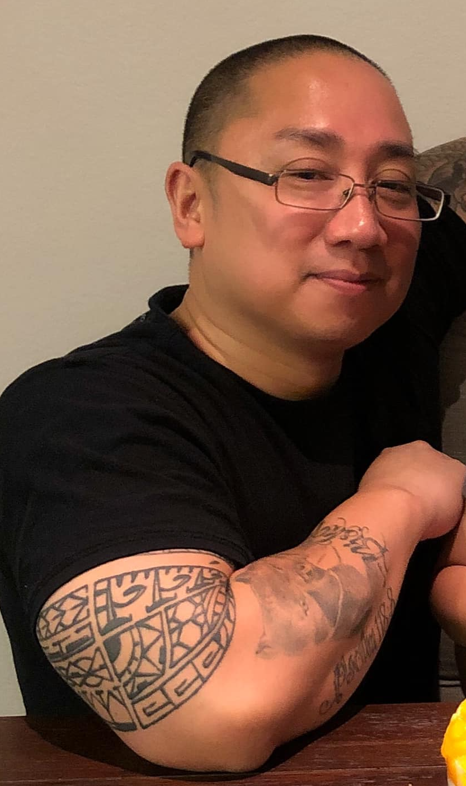

Meet The Team!
Harris Cosme

Personal Trainer, Owner
Harris Cosme is a veteran of the U.S. Navy. He is a family man and dedicated to his services to his church.
A self-motivated, dynamic, and passionate personal trainer with 4+ years of experience, who implements creative
exercises that helped clients achieve and maintain their health and fitness goals. 40% of that being clients
that are 65 years of age and above. Effectively helped 20+ clients attain their goals iwthin the appointed time
frame with an 80% client return. My passion is in guiding people to better health so that they can really enjoy life.
CREDENTIALS
- National Personal Training Institute 2016-2019
- NASM Personal Trainer Certificate 2016
- NPTI CPT CERT
- NPTI YOGA INSTRUCTOR CERT
- NPTI CORRECTIVE EXERCISE CERT
- NPTI HEALTH COACH CERT
Benny Alvarez and David Culver